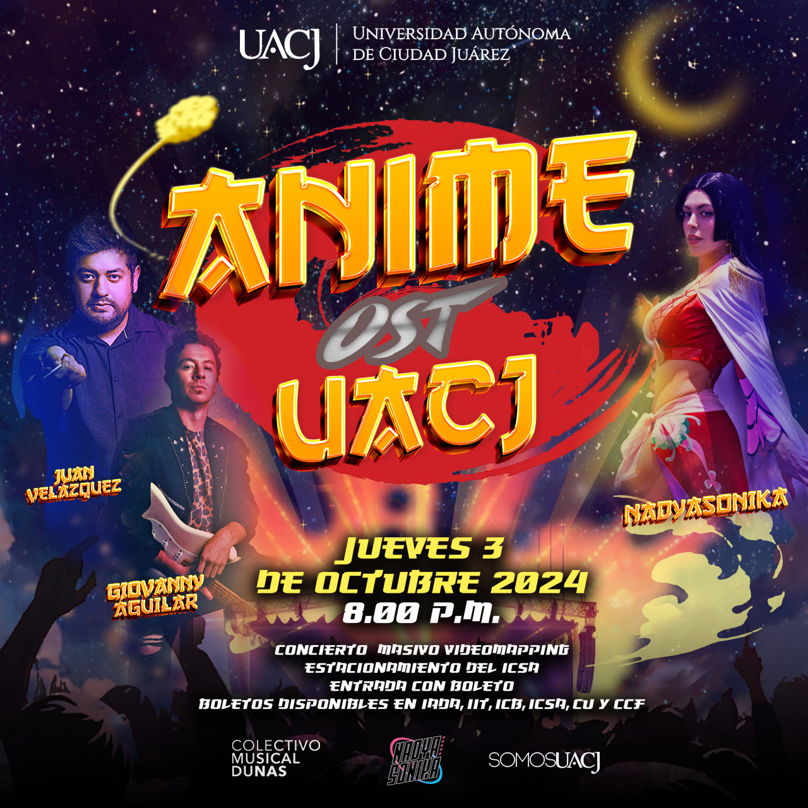
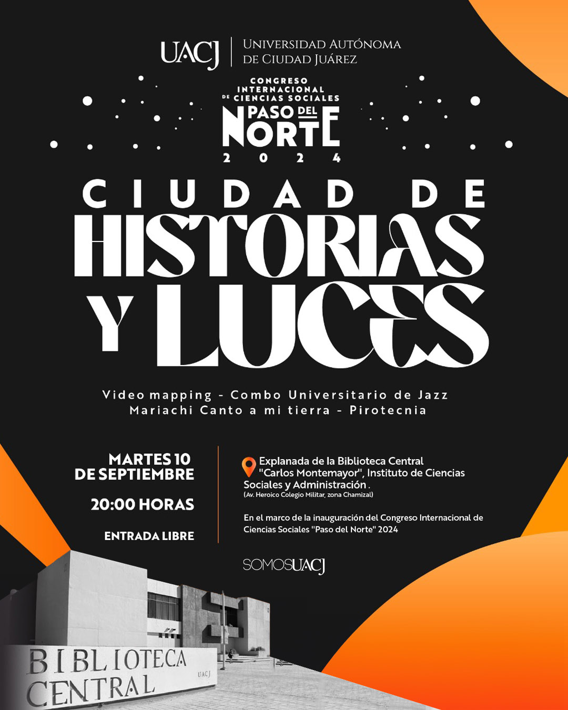
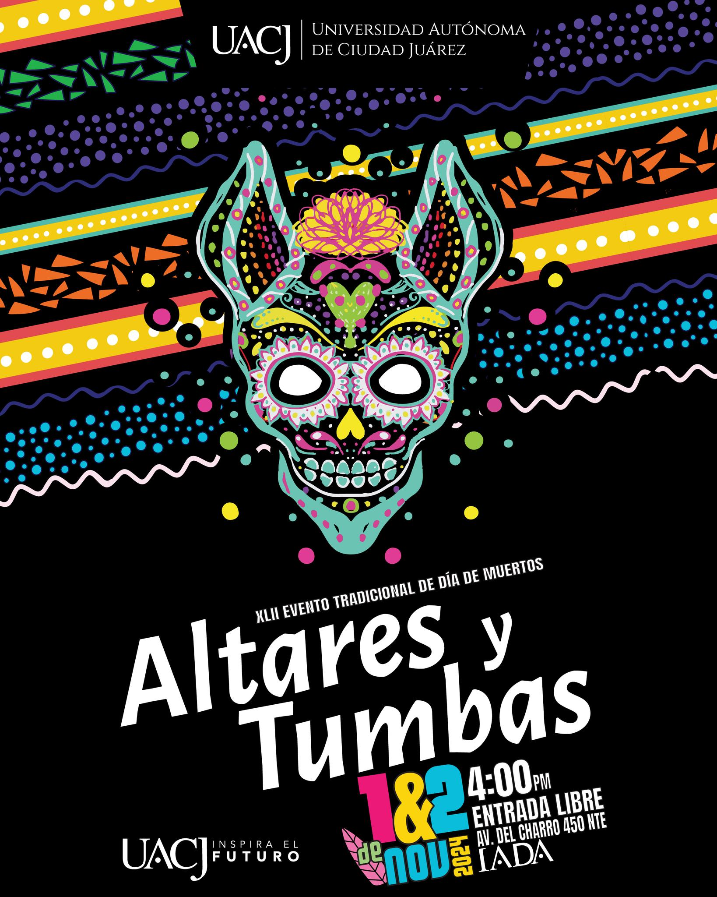
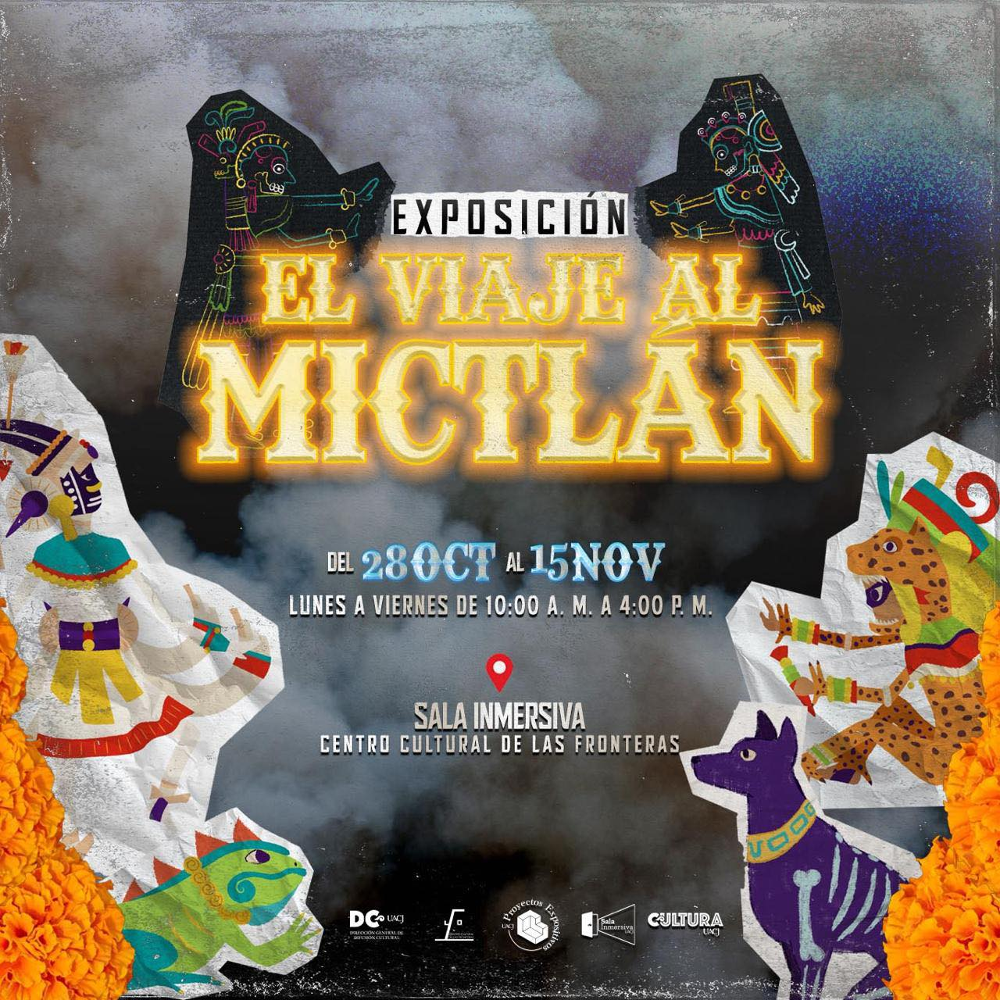

Anime OST UACJ 2024 fue un concierto de orquesta rock con videomapping que tuvo lugar en el estacionamiento del Instituto de Ciencias Sociales y Administrativas (ICSA) de la Universidad Autónoma de Ciudad Juárez (UACJ) el jueves 3 de octubre del 2024.
Mi participación en este proyecto fue la creación de contenido para visuales, es decir, crear animaciones para la proyección de videomapping. Me asignaron la introducción del concierto con el Equipo Rocket, el opening de Pokémon y tres canciones de One Piece. Para crear los visuales me apoyé principalmente de los programas de Adobe Illustrator y Adobe After Effects. También fui operadora de equipo, asisiendo a mi equipo en el proceso de mapeo del edificio.


Ciudad de Historias y Luces fue un espectáculo de música, video mapping y pirotecnia, en el marco del Congreso Internacional de Ciencias Sociales Paso del Norte. Se llevó a cabo el martes 10 de septiembre en la explanada de la Biblioteca Central del Instituto de Ciencias Sociales y Administrativas.
El semestre pasado, formé parte de un proyecto de videomapping en la Sala Inmersiva en las instalaciones del Centro Cultural de las Fronteras, realizando un homenaje a Juan Gabriel. En esta ocasión para este evento, hicimos la adaptación de la proyección de la sala para el edificio. También se realizaron fondos para los números de música y operación de equipo.
Como cada año, ahora se celebró la XLII edición del evento tradicional de día de muertos Altares y Tumbas 2024, donde se llevó a cabo en el Instituto de Arquitectura, Diseño y Arte. Alumnos de diferentes programas académicos del IADA se unen para realizar creaciones en conmemoración al día festivo.
En esta ocación, sólo tuve una pequeña participación. Se me dió la tarea de realizar un clip animado para proyectarla en una superficie que tendrá forma de calavera. Se utilizaron algunas inspiraciones de bordados y de la temática de alebrijes para crear una secuencia de Motion Graphics en Adobe After Effects con figuras vectorizadas en Adobe Illustrator.

Este proyecto fue una exposición inmersiva llamada “Viaje al Mictlán”, una historia basada en la creencia de los mexicas de que al morir, las personas iban al Mictlán, un lugar donde se descansaba para siempre. Tuvo lugar del 28 octubre al 15 noviembre de 2024 en Sala Inmersiva ubicada en las instalaciones del Centro Cultural de las Fronteras.
